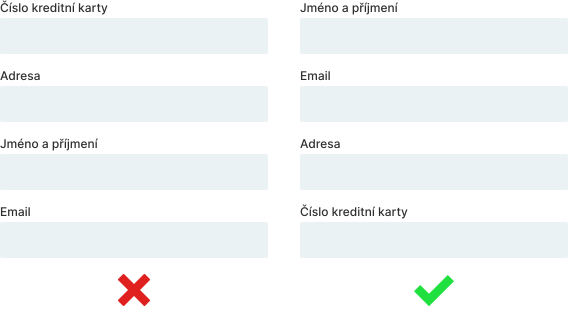
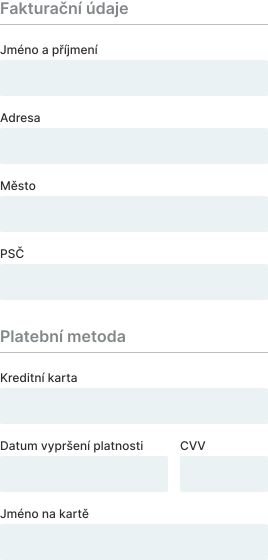
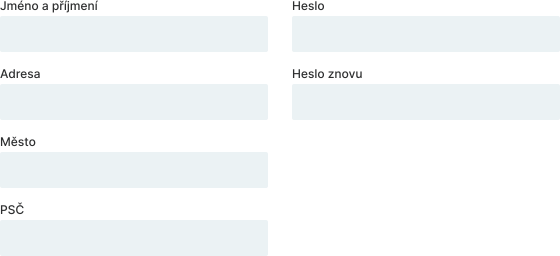
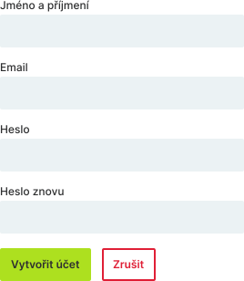
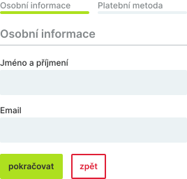
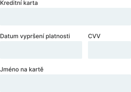
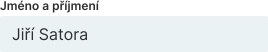
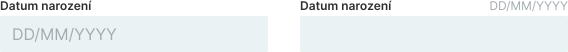
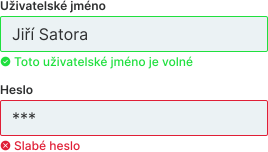
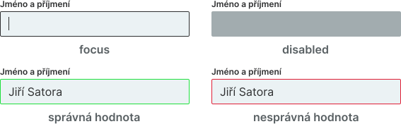

Formuláře
Jedním z nejčastějších UI elementů, se kterými se na webových stránkách setkáváme, jsou formuláře. Setkáváme se s nimi hodně často a pravděpodobně si to někdy ani neuvědomujeme. Jako formulář můžeme považovat registrační nebo přihlašovací stránku, ale také třeba vyhledávací pole je formulář. Správný návrh formulářů je pro úspěch webové stránky nebo aplikace stěžejní.
Plánování tvorby formuláře
Předtím než vůbec začneme s návrhem formuláře, tak bychom se měli zamyslet nad tím, na co se vůbec chceme uživatele zeptat. Pomocí formuláře vlastně vedeme s uživatelem rozhovor. Pokud máme hodně otázek, tak je v některých případech dobré, rozdělit formulář na více částí. Například u objednávkového formuláře v nějakém e-shopu se to tak v některých případech hodí udělat. Na jedné stránce by uživatel mohl vyplnit adresu a na další zase třeba vybrat platební metodu.
Tipy pro návrh formulářů
Zde jsem sepsal 10 tipů, které vám při vytváření formulářů mohou pomoct.
Pořadí otázek ve formuláři
Prostřednictvím formulářů s uživatelem vedeme rozhovor. Proto je potřeba otázky ve formuláři logicky poskládat. Když někoho poprvé potkáme a chceme zjistit jeho adresu, tak se také nejprve zeptáme na jeho jméno a až poté na jeho adresu.
Seskupení otázek do kategorií
Pokud máme dlouhý formulář se spoustou otázek, tak není špatné tyto otázky rozdělit do kategorií podle toho čeho se týkají. Nemusí to nutně znamenat že pro každou kategorii musí být samostatná stránka, někdy stačí otázky jen seskupit do skupin na jedné stránce jak to ukazuje následující obrázek.
Rozmístění inputů ve formuláři
Jsme zvyklí číst zleva doprava a shora dolů. Jednotlivé inputy ve formuláři bychom tedy měli skládat pod sebe a nevytvářet další sloupce. Když se podíváte na následující obrázek, tak po vyplnění prvního inputu nevíte jestli pokračovat doprava nebo dolů.
Tlačítka
Pokud máme ve formuláři více tlačítek, tak jsou někteří lidé toho názoru, že by měla být zarovnána vlevo, protože čteme zleva doprava. Ale když odesíláme formulář, tak si většinou představujeme, že se pohybujeme doprava na další krok nebo stránku. Někteří lidé tedy zarovnávají tlačítka napravo. Záleží na nás jak se rozhodneme.
Další věc kterou je potřeba udělat, pokud ve formuláři máme více tlačítek, je nějak je odlišit. Díky tomu se vyhneme tomu, že by uživatel náhodou kliknul na nesprávné tlačítko. Nechceme aby uživatel omylem kliknul na tlačítko, které odeslání formuláře zruší a přesměruje jej jinam.
A poslední věc kterou bych chtěl u tlačítek zmínit je ta, že by výška inputů měla být stejná jako výška primárního tlačítka. Díky tomu náš design vypadá více konzistentní.
Ukazatel průběhu
Pokud máme formulář rozdělený na více částí, tak je dobré dát uživateli vědět, jak na tom s vyplňováním formuláře je. Můžeme mu například někde přidat text "krok 1 ze 3" nebo přidat něco podobného co ukazuje následující obrázek.
Šířka inputů
Některé inputy, do kterých uživatel píše například jen 4 čísla, nepotřebují velkou šířku. Pokud má input do kterého se má zadávat jen pár znaků velkou šířku, tak to může uživatele zmást a může si myslet, že by měl zadávat více znaků. Tento nedostatek můžeme v některých případech vyřešit tím, že dva inputy seskupíme na jeden řádek, jak to ukazuje následující obrázek.
Popisky inputů
Popisek inputu by měl jasně popisovat co by měl uživatel do inputu zapsat. Také by se měl písmem odlišovat od textu inputu.
Placeholdery
Placeholder je text, který se zobrazí, když je input prázdné. Jako placeholder můžeme uživateli třeba poskytnout nějakou radu, která mu ukáže v jakém formátu má do inputu zadat data. Problém ale je, že placeholder zmizí když uživatel začne do inputu psát text a naši radu, kterou jsme mu poskytli si již nebude moci přečíst aniž by text smazal. Z tohoto důvodu je lepší namísto placeholderu napsat uživateli radu třeba nad pravý horní roh inputu.
Ikony
K vizuálnímu zlepšení našeho formuláře můžeme použít ikony. Mají čistě dekorativní účel. Následující obrázek ukazuje jejich možné použití v inputu.
Další možné použití ikon je třeba pro validaci, jak ukazuje následující obrázek. Někteří uživatelé mohou být třeba barvoslepí a ikony jim mohou pomoci zjistit, jestli se jedná o kladnou nebo chybovou zprávu.
Navrhování různých stavů inputu
Inputy mohou nabývat různých stavů. Uživatel může mít input zakliknutý a psát do něj, může být vypnutý (disabled), může být označený že obsahuje nesprávnou hodnotu, a tak podobně. Inputy je potřeba pro tyto různé stavy navrhnout, aby programátoři věděli, jak je ve kterých situacích nastylovat.
Typy inputů
Existuje mnoho způsobů, jak můžeme uživateli umožnit zadávat data. Díky JavaScriptu je v podstatě možné všechno, ale někdo to samozřejmě musí naprogramovat a to nemusí trvat krátkou dobu. Některé časté inputy se ale pomocí JavaScriptu programovat nemusí, a jsou k dispozici přímo ve značkovacím jazyku HTML. Jako designéři bychom tedy měli znát, jaké inputy v HTML existují, abychom něco nenavrhovali zbytečně jiným způsobem a programátoři by to potom museli programovat pomocí JavaScriptu. Určitě pro vytváření všemožných inputů existují také JavaScript knihovny, které programátorům vytváření speciálních inputů mohou ulehčit. Pokud tedy známe nějakou knihovnu pro vytváření nějakého speciálního inputu, tak můžeme programátorům navrhnout jestli by ji nemohli použít. Primárně bychom však měli navrhovat inputy, které již v jazyku HTML existují.
Zde jsem popsal a ukázal inputy, které jsou přímo součásti jazyka HTML a programátoři by neměli mít problém s jejich používáním. Některé typy inputů se sice v jazyku CSS stylují dost složitě a používají se různé triky, ale to ke stylování inputů už tak nějak patří.
Textové input
Textové input určitě znáte. Setkáváme se s ním běžně a slouží pro vepsání textu. Pokud je text pro input moc dlouhý, tak se neukazuje celý text, ale jen jeho část.
Číselné input
Pro zadávání čísel existuje číselné input. Narozdíl od klasického textového inputu do něj lze zadávat jen čísla a ty se dají také zvyšovat nebo snižovat pomocí postranních šipek.
Textové pole
Pro zadání dlouhého textu v HTML existuje textové pole. Toto pole může být horizontálně nebo vertikálně roztahovatelné, záleží jak jej programátor nastaví.
Barva
Pro výběr barvy v HTML existuje speciální input. Existují ale také různé JavaScript knihovny, které nám umožňují vybrat barvu také jinými způsoby.
Zaškrtávací pole
Pokud po uživateli chceme, aby něco například potvrdil, tak můžeme použít zaškrtávací pole. Více se možná setkáte s názvem checkbox.
Výběr
Pokud chceme uživateli umožnit vybrat si jednu možnost z rozbalovacího seznamu, tak k tomu v HTML existuje input.
Přepínač
Pokud potřebujeme, aby uživatel vybral jednu z možností, tak můžeme použít přepínače. HTML poskytuje speciální inputy pro výběr možnosti, které když se propojí dohromady, tak může být vybrána jen jedna možnost.
Rozsah
Pro výběr rozsahu existuje input, který uživateli umožňuje si tažením vybrat, jaký rozsah chce. Tento input se v jazyku CSS styluje dost složitě. Než abych jej styloval, tak bych asi hned sáhnul po JavaScriptu nebo bych použil tento webový nástroj.
Soubor
Pro výběr souboru existuje speciální input s tlačítkem a textem. Když uživatel na tlačítko klikne, tak bude moci vybrat soubor. Po vybrání souboru se uživateli vedle tlačítka zobrazí název souboru, který vybral.
Datum
Pro zadání datumu existuje input, do kterého může uživatel datum zadat pomocí klávesnice, nebo kliknout na ikonu kalendáře a zvolit si datum ve speciálním okně k tomu určeném.
Čas
Pro zadání času existuje input, do kterého uživatel může čas zadat pomocí klávesnice, nebo kliknout na ikonu hodin a zvolit si datum ve speciálním rozbalovacím seznamu.
Datum a čas
Pokud chceme sloučit zadávání datumu a času dohromady, tak můžeme. V HTML na to existuje také input.
Měsíc
Pokud chceme uživateli umožnit vybrat konkrétní měsíc, tak k tomu v HTML existuje speciální input. Tento input použijeme, když chceme vybrat měsíc v nějakém konkrétním roce. Vybíráme totiž rok a měsíc.
Týden
Pokud chceme uživateli umožnit vybrat týden v roce, tak je na to v HTML speciální input.